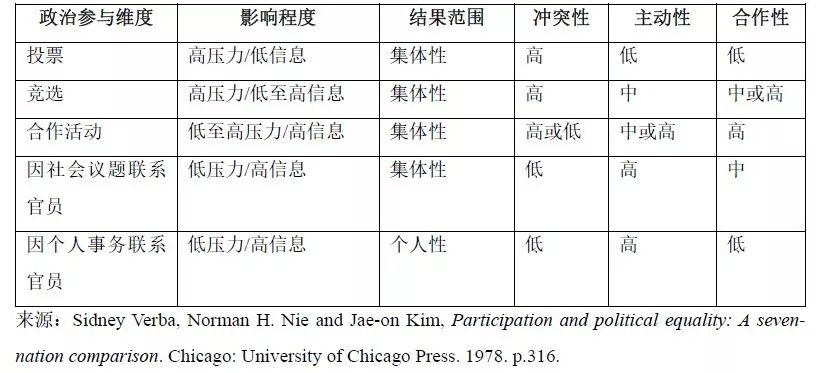
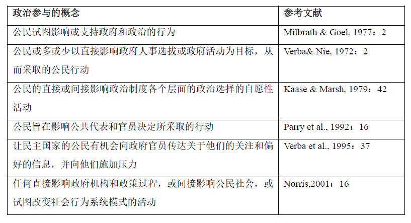

收录于合集
作者简介： 宁晶，北京大学政府管理学院博士生；孟天广，清华大学政治学系副教授。
文献来源： 《国外理论动态》2019年第11期，第80-91页。
内容提要： 作为政治学领域经久不衰的话题，政治参与是现代国家中公民成为“政治人”的基本途径，受到各国政治学家的关注。迄今为止，政治参与研究已经走过60余年的历程，并且基于政治参与的类型学形成了三波研究。现阶段政治参与研究已经进入了较为成熟的阶段，政治参与从狭义的制度化政治参与，如投票、政党参与等方式，逐渐扩展至非制度化的政治参与，如游行、示威、罢工等方式。随着技术革新和制度演进，政治参与的形式越发多样化，网络参与逐渐成为公民参与政治过程的重要途径。总体而言，政治参与研究逐渐向新行为主义、宏观政治学与微观政治学的融合、技术政治和因果推断发展的方向发展。
关键词： 政治参与；政治人；制度化参与；非制度化参与；网络参与
一、变革世界中的政治参与
正如亚里士多德的经典论断，“人本性上是一种政治动物。”西摩·M·李普塞特（1959）在其经典论著《政治人：政治的社会基础》一书中提出政治参与是现代社会成为“政治人”的必要途径，民主政治的社会基础是不同阶层或社会群体围绕着凝聚共识（合法性）或标识分歧（偏好冲突）而发生的诸如投票、政治运动等行为。西德尼·维巴和诺曼·H·尼（Sidney Verba and Norman H. Nie）进一步指出：“没有政治参与的地方几乎不存在民主，政治参与范围越广，民主更可能发生。”自此之后，政治参与成为了政治学经久不衰的经典主题，得到了世界各国政治学家的广泛关注。
政治参与对于现代国家构建至关重要，也是联系公民与国家、公民与政策制定、公民与政策实施之间的纽带。首先，政治参与是民主不可缺少的特征。罗伯特·A·达尔（Robert A. Dahl）认为多元政体的两个决定要素之一就是政治参与，政治参与是公众表达偏好和不满的渠道，也是促进政府通过正式途径回应民众的来源。当公民参与到政治生活中，能够更好地向政府问责，保障宪法赋予的公民权利，在政策过程中更好地代表个人和社区的意见。其次，作为行动主义的政治参与具有多重价值，能够强化公民意识、提高社会宽容、促进互助互惠以及培育社会资本。最后，政治参与也是善治的重要特征，政治参与在政府治理过程中，通过向政府传递公民兴趣、偏好，促进政府产生更优良的决策和更合法的结果，提升政府的效率和责任。
已有对政治参与的研究中，主要对政治参与的不同类型及其根源进行分析，这建立在政治参与不同概念的基础上，使得政治参与研究领域中存在了较大争议。例如，采用狭义政治参与概念的研究者认为全球范围内政治参与程度持续下降，但采用广义政治参与界定的研究者却发现不仅参与的程度提高了，参与方式也发生了转型，非制度性参与、网络参与等新兴政治参与形式日益兴起。同时，人们对政治参与之根源也存在宏观政治学与微观政治学的争论，前者认为制度和结构决定政治参与程度及类型，后者认为经济地位、政治心理和信息传媒塑造参与行为。因此，厘清政治参与的概念、类型学及其影响因素是深化政治参与研究的关键所在。为了弥补这一缺陷，本文对经典文献中政治参与的概念演进、类型学和主要解释理论进行了学理探究，并从研究范畴、研究议题、理论发展和方法创新四个维度讨论了政治参与研究的未来趋势。
二、政治参与的概念演进及类型学
（一）政治参与的概念演进
政治参与研究中较早的一批文献认为政治参与必须是影响政府决策、人事选拔或政府活动的行为，即公民必须参与、有意地影响政府主动性行为。政治参与具有四个特征：（1）政治参与是具体行为而不是态度；（2）政治参与是普通人的政治活动；（3）政治参与是试图影响政府决策的活动；（4）政治参与是试图影响政府的所有活动，而不管这些活动是否产生实际效果。”在这一时期，政治参与主要关注正式的、制度化的政治参与。在这一时期，政治参与的内容根据影响程度、结果范围、冲突性、主动性和合作性，可以分为五个参与维度：投票、竞选、合作活动（包括加入或为政党和组织工作，并向这些团体或团体捐款）、联系公职人员、以及合作或社区活动（所有形式的活动都侧重于当地社区的问题）（见表1）。
表1： 政治参与的维度与行为

随着政治参与研究的逐渐深入，其内涵从单一维度发展为多维度。越来越多的研究将其他参与形式纳入了政治参与，例如非理性或非制度化的参与方式。表2梳理了政治参与最为常见的定义。总的来看，这些概念表明政治参与作为一个抽象概念，涵盖了与政府、政治或国家有关的公民自愿性活动，旨在解决社区问题、改变系统性的社会行为模式、致力于影响政体的集体行动或者诱导重大的社会变革。综上所述，这一阶段政治参与的概念具有四个特点：一、政治参与是一种行为，关心政治或声称对政治感兴趣不构成参与行为；二、政治参与是人们以公民身份从事的活动，而不是政治家或专业游说者的行为；三、政治参与应当是自愿的，而不是由法律规定的；四、政治参与涉及到政府、政治或者广义的国家，包括政治体系、政治过程等，并不限于特定的阶段，也不涉及到具体的层面或领域。
表2： 政治参与的常用概念界定

随着政治参与现象的演变及跨国比较研究的发展，研究者逐渐超越传统上对投票、工会活动、政治抗争等个别政治参与类型的分析，进入对政治参与更为系统性地类型学研究。纵观既有文献，政治参与存在多样化的类型，以制度化程度和参与规模为维度，我们可以将典型的政治参与分为四个类型：制度化个体参与、制度化集体参与、非制度化个体参与、非制度化集体参与。一方面，从制度化的角度而言，政治参与可以分为制度化（institutionalized）与非制度化（non- institutionalized）两类，前者通常是一国政治制度下合法的常规性参与渠道，后者则代表合法或非法的政治抗争或极端行动。通常而言，制度化参与包括选举、政党参与、联系政治家、竞选参与等。非制度化参与主要指抗议行为，如签署请愿书、示威游行、抵制、罢工以及任何其他抗议性的行为。另一方面，政治参与按照行动规模可以分为个体参与和集体参与，参与规模对政府意味着不同强度的集体行动和政治压力。个体形式的政治参与主要以公民个体的形式参与，例如投票、抵制和个体抗争。集体形式的政治参与往往基于职业、社群或利益而组织化地对政治过程施加影响，如成立政党、示威游行和暴力冲突等。
（二）理解政治参与：三波研究
政治参与的概念发源于西方国家，伴随着政治参与实践的推进，有关政治参与的比较研究也不断扩展。对20世纪以来全球范围内政治参与研究的发展，可以将其概括为“三阶段”，分别以选举为主的政治参与、非制度化的社会运动以及政治参与的多元化为代表。
第一阶段为20世纪50年代至60年代，政治参与的研究主要关注以选举为主的传统政治参与。二十世纪中叶，代议制民主的崛起和普选的发展使得这一阶段的研究对“政治参与”的理解非常严格。早期的研究主要集中在投票、竞选以及政党参与上。到20世纪60年代初，政治参与逐渐扩展到公民联系政府官员的行为。政治参与被理解为政治家和政党选举以及公民与政府人员的联系，这些活动主要是传统的制度化参与。早期研究强调政治参与必须是影响政府决策的行为。阿尔蒙德和维巴（1963）、维巴和尼（1978）、亨廷顿和纳尔逊（1989）等对发达国家和发展中国家开展的比较研究均强调政治参与旨在影响政府人事任命或决策行为。
第二阶段为20世纪70年代至80年代，政治参与研究逐渐转向以非制度化的社会运动为主要研究对象。经济社会的迅速发展带来了政治参与的显著增长。诸多学者认为政治参与不应仅限于制度化参与，还应当对非制度化参与进行研究。在这一时期，研究者在两个方面发展了政治参与研究。一方面，由于社区团体的日益增加，公民与政府官员的联系渐趋频繁。维巴和尼在这一阶段开始强调政治参与不是一维的，政治参与也包括公民与政府官员、政治家之间的直接联系以及“社区活动”。但是，他们认为政治参与并不包含仪式性参与、支持性参与、符号性参与，也不包括暴动、抗议、叛乱等暴力行为。另一方面，更多学者认为政治参与并不限于常规性参与，公民反对和不赞成行为也是公民表达利益的方式。不同公民具有不同的“抗争倾向”，即个人采用非制度政治参与的形式，例如请愿、示威、抵制、占领公共场所、堵塞交通、财产损失和个人暴力等。
第三阶段为20世纪90年代至今，现代社会的政治和非政治领域的界限模糊化，网络社群的发展导致政治参与多元化，人们不仅关注政治事务，还通过志愿服务和社会事务等“民间活动”参与政治。互联网时代政治参与形式及成因的多样化推动了近二十多年学界有关政治参与的深入研究。传统政治参与文献忽略了网络参与的诸多形式，如网络协商、网络集体行动等，或者将网络参与视为不太重要的话题。同时，网络政治参与概念和实证的不一致性是导致网络参与研究仍然处于争论中的主要原因。网络政治参与逐渐构成一个独立的政治行动领域，网络政治参与是线下政治参与的补充，即使其并不能完全替代传统政治参与的地位。
概括起来，既有文献主要对四类政治参与开展研究，并积累了丰富的理论成果：一、选举与投票。民主制度的核心在于选民通过投票参与政治过程。在选举过程中，选民可以对一位或几位候选人表达支持或者给候选人排序。即使需要选举的只有一个职位，选举规则也可以要求当选者赢得相对多数或者赢得绝对多数。比较政治学中非常强调选民登记和投票的制度安排的重要性，因为这些制度设计对选民登记和投票结果都有着重要影响。大量实证研究表明，政治制度和选举规则、选举结果的接近程度、政党数量、经济发展以及国家规模等因素都会影响着投票结果。
第二，政党参与。政党是现代国家中最重要的政治代表组织，政党决定了动员哪些选民，以及如何对选民进行动员。政党通过极度简化选民的各种选项，将选民组织起来，因此政党认同、录用、竞选活动等也成为政治参与主要形式。政党与选举密切相关。选民是工具理性行动的行为体，能够根据政党展示出信息进行投票选择；政党为了获得更多的选票，会制定出能够吸引最多选民的纲领。这导致“中位选民”出现，即政党会向中间选民立场汇聚，并采用中间路线。后续研究表明，选民的政策偏好并不是简单的左右翼分布，从1970年代开始，选民的政策偏好逐渐转变，左右翼区分日益弱化，伴随着电视、网络等传播媒介的兴起，政治候选人与选民直接互动的机会大幅增强，公民的政党参与日趋弱化。
第三，政治抗争，即公民自愿参与的异议表达行动，包括非官方的罢工、抵制、请愿、示威，甚至是政治暴力活动。在政治抗争中，诉求提出者与其对象进行偶发性、公众性、集体性的互动，如果诉求得以实现，则会影响至少一方诉求者的利益。在宏观层面上，民主化转型、收入不平等、国家能力、左翼法团主义会影响公民的政治抗争倾向，在微观层面上，政治信任度、挫败感或剥夺感、受教育程度、社会组织网络、价值观等因素会影响政治抗争的行为。
第四，网络政治参与。网络政治参与日益成为政治参与的重要形式之一。互联网的特点及影响机制使得网民的网络政治参与行为大量涌现。网络政治参与的表现形式非常多样化，并且在不同群体和议题上有所差异。网络上存在的参与行为大致可以区分为政治关注和集体行动，后者有向抗争行动转变的可能性，在最近中东和东欧地区部分国家最终演变为“颜色革命”。网络政治参与分为五个等级：第一层级是获取信息，例如使用网络等；第二层级是实现交流，例如收发电子邮件、收发社交媒体信息等；第三层级是获取政治方面的互联网服务，包括参与民意测验等；第四层是提供公共空间，如公共论坛、博客等；第五层级是促成真正的线下政治参与。
三、政治参与研究的未来走向
进入21世纪，政治参与研究受到科技进步、学科交叉和方法创新的影响，呈现出四大发展趋势：走向新行为主义、宏观政治学与微观政治学的结合、走向技术政治、走向因果推断。
（一）走向新行为主义的政治参与
近年来，新行为主义在政治学领域再次兴起。行为主义是20世纪50年代兴起的社会科学研究范式，强调利用科学方法和经验数据从微观角度理解政治行为者的行为和态度，认为政治过程应该超越传统制度主义和思辨方法，研究政治行为者在现实政治生活中如何参与政治生活，以及其政治行为背后的理性或非理性根源。早期行为主义将心理学中的人格特质理论纳入政治参与研究。这一类研究最早可以追溯到坎贝尔等人《美国选民》一书中，他们提出一个人对自我和环境的感受差异可能会转换为政治过程。因此，人格特质是个体与环境互动方式的个体差异的重要来源，是影响政治行为的重要变量。
近年来，政治心理学逐渐将五大人格运用到政治参与研究，并强调探究人格特质与政治参与的因果关系。心理学家将人格概括为大五特征（The Big Five）：第一，开放性人格（openness）。开放性与公民的政治兴趣、政治知识和政治效能感密切相关，公民的开放性人格越强，更倾向于政治参与。第二，责任心人格（conscientiousness）对政治参与有正面影响。一些研究发现责任心强、对工作态度认真的公民会更频繁的投票，更不会参与政治抗争。第三，外向性人格（extraversion）强化政治参与。外向性人格中的乐观和自信特征使得公民具有较高的政治效能感，他们往往更多地通过社交网络参与政治。第四，宜人性人格（agreeableness）能够促进公民参与签署请愿书、联系官员、投票等当地性政治活动。第五，神经质人格（neuroticism）。一些研究发现神经质人格会对投票率产生积极影响，但更多研究发现神经质人格与政治参与之间尚未有因果联系。更进一步地，近年来学界尤其关注人格特质与政治参与关联的因果机制，譬如布兰德·韦尔斯特等（Brad Verhulst）通过使用遗传样本在解决内生性，进而探究人格特质与政治参与的因果关联。
由于受到新行为主义的影响，政治学在过去十年内逐渐将行为遗传（Behavior Genetics）用于解释政治行为和政治心理研究中。早期的研究主要发现遗传基因是影响政治态度的主要因素，随后研究人员开始将基因作为政治行为的一个预测变量。特别是，越来越多的证据表明，志愿服务和宗教活动等社会行为受到遗传基因和社会环境的影响。这也表明，遗传基因对政治参与也可能存在一定的影响。近年来，逐渐出现了遗传基因与政治参与的实证研究，形成了政治学和生物学的交叉学科研究，这部分研究指出政治科学家忽略了生物学在政治参与中的作用，将家庭作为政治参与的预测变量的研究也只是认为父母和孩子之间的联系是通过规范传播的结果，而不是基因的作用。詹姆斯·H·福勒（James H. Fowler）他们较早地使用双胞胎研究设计，建立了ACE模型，验证了基因与政治参与行为的关系。他们发现，60%的政治参与能够用遗传因素去解释。后续的实证研究验证了遗传基因在跨文化背景下对政治参与影响的稳健性，并且提出人格特质是基因与政治参与中的中介变量。人格特征是在政治行为之前形成的可遗传特征，因此他们可能代表着因果链的中间环节。遗传基因通过认知能力、个人控制和外向性进而影响政治参与。
（二）宏观与微观政治学相结合的“情景理论”
传统上理性选择和行为主义关注政治参与的微观动力，强调诸如经济地位、政治社会化、政治人格、大众传媒等因素对政治参与的影响。然而，比较政治学者越来越关注政体类型、经济发展、国家社会关系、全球化等宏观结构性因素对政治参与的系统性影响，以及宏观因素与微观因素在塑造政治参与时的互动模式，政治行为的情景理论由此兴起
影响政治参与的结构性因素主要包括政体类型与政治权力结构、选举制度、人口特征以及全球化。首先，不同的政治系统塑造着政治参与的行动模式。一般来说，民主政体下公民能够通过合法性的机制参与政治。其次，选举制度与投票行为密切相关。不同的选举制度对投票率的影响有所不同。一般而言，比例代表制可以增加政治效能感和预期投票收益，为选民提供更多投票选项，带来更高程度的政治参与。与此同时，投票的强制性会影响投票率。希腊、意大利等国曾经规定过强制投票，强制性投票会降低投票成本进而提高投票率。除此之外，选举过程简单还是繁琐、甚至投票日的选择也会影响投票率。其次，政治权力结构，即分权和集权的政治制度会对政治参与产生影响。国家内部的政治权力的集中程度与政治参与呈现负向关系，即权力越集中，参与水平越低。最后，全球化改变了民族国家的相对权力，当权力转移到国际组织和超国家机构时，全球化对政治参与有两方面影响：一方面，民族国家的削弱使得公民生活更加私人化，即公民不再偏好参与传统的、基于社区的政治参与；另一方面，全球化鼓舞了诸如单一问题倡导组织、跨国政策网络和新社会运动等兴起，公民能够通过向那些超国家机构表达政治关切，进而扩大政治参与的渠道以达到政治诉求。
影响政治参与的微观因素包括社会经济地位、家庭和教育因素等。首先，社会经济地位曾经被视为解释政治参与的首要原因。已有研究证明了社会经济地位较高的公民，往往处于较好的成长、生活、工作以及社会政治环境，因而获得的政治信息也更加充分，具有更高的参与倾向，这使得这些公民往往具有较积极的态度和参与能力。其次，家庭作为政治社会化过程也影响着政治参与。家庭是政治社会化的主要场所，能通过多种机制与政治参与相联系：一方面，家庭背景能够影响政治知识的积累；另一方面，父母政治知识能够通过教育或者影响子女青少年时期的政治知识，且这种影响是长期的；父母的政党偏好、政治参与也影响子女参与程度和形式，譬如更关注政治新闻、与家庭成员频繁讨论政治的个人更可能参与志愿行为和投票。最后，教育是促进政治参与的“普遍解决方案”。一方面，教育能够促进公民责任的提升，促进个人获得政治的认知技能，能够接触政治信息以及政策制定者。教育程度较高的公民一般具有更多地参与动机和技能，在受教育过程中获得了更高的公民意识，进而提高了其参与水平。另一方面，教育方式塑造政治参与类型偏好。学校能够为学生提供公民技能培训，如书信和辩论，促进学生更可能参与签署请愿书或抵制活动，听取政治新闻、开展有关志愿服务的课堂与参与慈善筹款和社区会议等密切相关。
（三）走向技术政治的政治参与
互联网和信息技术的发展，对政治参与研究也产生了极大影响。在本世纪初研究者就已经关注到媒体对政治参与的影响。媒体与政治参与关系主要有两种假说：媒体不适（media malaise）和良性循环（virtuous circles）。后续的研究逐渐强调不同媒介对政治参与的影响，传统媒体对政治参与带来不同的影响主要有三个原因：第一，媒介使用目的不同。罗伯特·普特南（Robert D. Putnam）的研究表明，使用电视有两种不同的目的，即娱乐目的和资讯目的。基于娱乐目的的使用行为会降低与政治参与；而基于资讯目的的使用行为会显著地促进政治参与。第二，媒介内容偏好不同。不仅媒介使用目的对政治参与的影响不同，媒介内容偏好不同对政治参与的影响也有所不同。偏好新闻的公民能够利用媒体中丰富的政治信息提高政治知识进而增加政治参与；但偏好娱乐内容的公民会放弃媒体中的新闻信息，并不能增加政治知识进而参与到政治生活中去。第三，渠道偏好不同。例如，一些公众倾向于观看公共电视新闻，而另一些公众偏向于观看商业电视新闻。公共渠道的使用促进了政治知识和政治参与水平的提高。
近年来，全球各国政府大力推动互联网信息技术的应用，将其作为国家治理的重要工具，互联网与政治的关系也成为政治学研究的焦点。互联网经济和社会发展产生了深刻影响，成为民众获取政治信息、追求话语权、实现利益诉求的重要途径。互联网已经成为政治参与的一个重要途径，不仅在在线请愿、电子邮件炸弹或虚拟静坐等线上参与上发挥作用，互联网还在2010年英格兰抗议学费事件、2008年奥巴马竞选等线下参与中发挥了重要的作用。同时，互联网作为一种动员方式能够减少依赖政党等政治机构的传统政治参与方式，这也会进一步影响公民参与政治的方式和行动。
随着公众利用网络空间表达意见频率和深度的发展，互联网作为可能的“信息源、交流媒介和虚拟的公共领域”，有助于公众进一步了解难以获知的公共政策议题，进一步提高公众的交流能力，同时有利于提高在线议题团队政治参与的潜能。现有研究大多乐观地预期互联网普及必然带来“数字民主”（Digital Democracy），即信息技术帮助公民克服时间、空间上的限制，使得政府治理更加民主，公民也因此掌握更多的知情权、政治知识，更加积极地参与政治。互联网为公民创造了积极参与公共治理的创新途径，这为直接民主、协商民主带来了新元素。大量实证研究已经表明，互联网对公民政治参与有显著的促进效应，被称为动员（拓展）效应（Expansionary Perspective）。
网络民主的悲观主义者认为互联网普及无助于网络政治参与。密集的网络化及网络的娱乐化、商业化会导致公众退出公共治理，疏离于政治生活，引起政治兴趣和政治参与水平的下降。一方面，电视、互联网等娱乐方式的出现使得社会生活发生了很大的改变。公民不再像过去那样积极参加社团活动，年轻人不再热衷于关心和参加政治生活。另一方面，网络基础结构主要由物理层、代码层、内容层构成，互联网使用行为忽略了网络空间开放度的关键变量——搜索层。搜索引擎推动了公众注意力的高度集聚化，但也约束了公民的选择。因此，网络虽然创造了巨量的政治信息，但公民对政治信息的认知仍然是有限的，“数字民主”事实上是一种网络浪漫主义。
（四）走向因果推断的政治参与
半个世界以来政治科学方法的积累以及人类社会对政治学知识生产的内容、质量和价值的定义使得政治学发展前沿正在经历探究政治现象之因果的变革。实验方法是研究因果关系的有力工具，政治参与研究者开始致力于解决政治参与研究中存在的因果识别问题。例如，雷切尔·M·桑德海默尔和唐纳德·P·格林使用了两项实验室实验和一项自然实验对教育对投票行为的影响进行研究，通过这三种不同类型实验发现，教育程度的提高导致选民投票率提高。海伦·马吉茨等使用实验室试验的方法验证社会信息对在线参与的关系。他们招募了668名受访者使用互联网远程参与实验，选取了六个类型的请愿书。干预组中，受访者能够看到请愿书的类别，包括请愿人数众多、请愿人数中等、请愿人数较少；控制组中所有参与者未获得与其他人请愿的信息。通过这种参与实验，他们识别了社会信息对互联网政治参与的干预效应。
随机实验虽然说服力较强，但是成本较高，准实验方法是一种较好的替代方法。例如梅克·梅雷迪思（Mac Meredith）使用断点回归的方法验证早期参与决定对后续政治行为的影响。美国宪法修正案保障十八岁以上的公民具有投票权，投票年龄的限制将年龄相同的公民划分为具有选举资格和不具有选举资格两个群体。他比较了参加选举的年龄——十八岁之前与十八岁之后的政治参与情况，发现过去的选举资格会增加后续政治参与性，过去的选举资格会影响政治认同，当选民获得首次资格以后，选举资格对政治参与的影响依然存在。
工具变量也被用于解决政治参与中内生性的问题，这一方法主要被用于探究教育程度与政治参与之间的关系。托马斯·迪（Thomas S. Dee）采用了各州义务教育法的差异和高中到社区学院的距离作为教育程度的工作变量，基于工具变量发现教育程度对政治参与的净效应。凯文·米利根等人（Kevin Milligan）使用义务教育法中的义务教育年限和童工法作为教育水平的工具变量，发现了教育程度对投票行为的影响在美国和英国这两个国家有所不同。亚当·J·贝林斯基和加布里·伦茨（Adam J. Berinsky and Gabriel S. Lenz）使用20世纪60年代后期婴儿潮一代作为教育程度的工具变量，发现受教育程度的提高对政治参与有着巨大的影响。
倾向值匹配方法被广泛用于解决教育与政治参与之间的因果推断问题，其原理在于基于反事实的框架建立一个反事实组（控制组），从而获取实验组和控制组在因变量上的平均干预效应，由此判断原因（自变量/干预变量）对结果（因变量）的影响方向和程度。例如辛迪·D·卡姆和卡尔·L·帕默（Cindy D. Kam and Carl L. Palmer）使用倾向值匹配方法，将大学入学率作为干预变量，进而发现上大学对政治参与没有影响。亚历山大·梅耶（Alexander K. Mayer）采用基因匹配（genetic matching）创建了平衡的控制组和对照组，并且基于政治参与理论重新调整了干预变量，研究发现教育程度的提升促进了政治参与。塞巴斯蒂安·巴伦苏埃拉等（Sebastian Valenzuela）利用基于2011年智利学生示威之前、期间和之后的重复横截面调查数据，发现使用Facebook和Twitter能够提高学生参与政治抗争的倾向。通过倾向值匹配的方法，这项研究减少了自我选择对可观察特征的估计偏差，产生了更为稳健的估计结果。
四、结论与展望
政治参与是政治学中经久不衰的经典议题，对国家治理的重要性不言而喻。目前国内已有一些政治参与的理论和经验研究，但对比较视角下政治参与的研究热点和前沿关注不足。本文在探究全球范围内政治参与的研究脉络及进展的基础上，从研究范畴、研究议题、理论发展和方法创新四个维度讨论了政治参与研究的未来趋势，以期为政治参与的本土化研究提供学理基础与创新思路。
首先，从研究范畴的拓展上，政治参与研究已经进入了较为成熟的阶段。政治参与从狭义的制度化政治参与，如选举、投票、政党参与等类型，逐渐拓展为研究游行、示威、罢工等非制度化参与。随着信息通讯技术的普及，政治参与的形式越发多样化，网络参与逐渐成为政治参与的重要类型。互联网的不断普及，使其成为公众追求话语权实现、引发社会关注以实现利益诉求的重要方式，对全球范围内的国家治理带来重要影响。各国政府大力推动互联网技术的发展和应用，互联网与政治的关系、线上参与与线下参与的关系逐渐成为政治参与研究的焦点。
其次，从研究议题的演进上，20世纪以来，政治参与的研究经历了三阶段，从以选举为主的政治参与发展到非制度化的社会运动再发展到多种政治参与形式并存。第一阶段的研究主要集中在投票、竞选与政党活动，第二阶段扩展到社会运动、政治抗争等非传统和非制度性的政治参与，第三阶段则关注更为多元的志愿服务、社区参与、网络参与等参与类型，学者们逐渐将研究精力转移到这些新兴参与类型及其对传统参与类型的替代或强化关系。
再次，从理论发展来看，政治参与的解释性理论日趋成熟，推动着比较政治学的发展。传统上理性选择学派和行为主义学派关注政治参与的微观动力，强调诸如经济社会地位、政治社会化、政治人格、大众传媒等因素对政治参与的影响。然而，比较政治学者越来越关注政体类型、经济发展、国家社会关系、全球化等宏观结构性因素对政治参与的系统性影响，以及宏观因素与微观因素在塑造政治参与时的互动模式。
最后，交叉学科以及新兴研究方法深刻地影响着政治参与研究。心理学、计算科学、网络科学等最新发展影响着政治参与的研究议程和方法论。譬如心理学将遗传基因引入政治心理学，重启了政治参与的新行为主义研究，采用双胞胎设计，建立ACE模型验证遗传变异的政治参与效应，同时关注人格特质在遗传变异和政治参与的中介作用。互联网与大数据时代的到来也使得学者们开始探讨互联网对政治参与的复杂影响，对“数字民主”和“数字鸿沟”等理论假设进行检验。在研究方法上，大数据方法、实验室实验、现场实验等被日益广泛地应用于探究政治参与的动力及其政治后果，以探究政治参与现象背后的因果关联。
全文注释和参考文献略
编辑：康张城